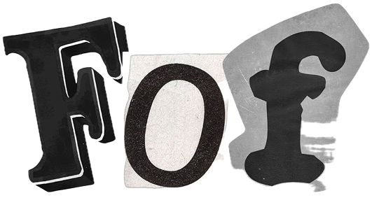

The Fear of Forgetting is a deeply personal, analytical exploration of the mechanisms we use to anchor our passing moments. Over a five-year university timeline, this project acts as an archaeological dig into my own daily habits of self-documentation, examining how the dual forces of analog journaling and digital/film photography shift as the weight of life responsibilities increases.
Through decades, diary pages have collected raw ink, and rolls of film have captured passing lights. But as academic demands, career obligations, and exams compounded, the physical camera was often left behind on the shelf. The visual footprint of my daily experiences began to shrink, giving way to a more internal, reflective practice—journaling.
By cataloging every iPhone photo, digital camera capture, diary page, and exam session from September 2021 to April 2026, this project bridges the subjective anxiety of losing memories with objective, data-driven insights. It is a testament to how our documentation habits are not constant, but fluid reactions to stress, time, and personal growth.
The final step of this analysis brings together all previous components into a single visualization, allowing a direct comparison between the decline in media capture, the increase in journal writing, and the evolution of my Responsibility Index, defined as the combined effect of academic and work-related load.
All variables are represented as time series across the five university years, in order to highlight how my Fear of Forgetting-related behaviors evolved alongside changing life conditions. This final overview in a line chart aims to provide a consolidated perspective on the relationship between my documentation habits, increasing responsibilities, and broader personal development throughout my time at university.
I am Nicol Damelio, a student currently based in Bologna, deeply fascinated by memory, archives, and digital footprints. This case study combines statistical exploration and scrapbook aesthetics to examine the anxiety of memory loss and preservation patterns.
Through the intersection of analog diaries and film photography, this project reflects on how our documentation habits adapt to stress, exams, and university life cycles, reshaping what we decide is worth saving.